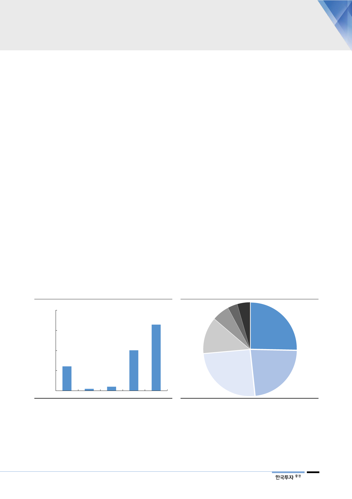

III. 해외 사업에 대한 시각 개선되는 시점
해외 프로젝트 가치
주가 기여 낮았던 이유
2017년 영업이익의 87%를 차지하는 국내 규제사업(LNG 도입과 도매판매 부문)
은 설비자산 운영 및 투자에 대한 이익을 정해진 산식에 따라 보장받고 있다. 수
익구조가 안정적인 만큼 주가 판단에서 적정가치를 수렴해 가고 있다. 국내 규제
사업은 예측이 용이한 만큼 투자가들의 관심은 영업이익 기여가 낮음에도 해외
자원개발 사업에 종종 맞춰져 왔다. 가스공사는 이라크, 미얀마, 호주 등 13개 국
가에서 20개가 넘는 자원개발 사업을 진행하고 있다. 대부분의 해외 프로젝트 이
익은 유가에 연동되어 있다. 하지만 해외 프로젝트는 자원개발의 특성 상 불확실
성이 높고 이익 전망의 가시성은 낮다. 특히 2015~17년에는 유가 하락에 따른
손상차손 우려가 커지면서 해외 부문의 가치는 주가에 거의 반영되지 못했다.
지난 5년동안 해외사업
3.4조원 손상차손 반영
이제는 추가적인 손상차손 위험성은 제한적이라 판단한다. 최근 유가가 다시 약
세로 전환했지만 2~3년 전의 저유가 기조와는 여전히 거리가 있다. 이미 가스공
사는 2012년부터 2017년까지 해외 자원개발사업에 대해 3.4조원의 손상차손을
인식했다. 유가가 이익의 중요한 기준이 되는 호주 GLNG 사업은 최근 3년간
1.8조원의 자산손상을 반영했다. 호주 GLNG 프로젝트의 자본금은 4,665억원으
로 낮아졌다. 현재 JCC(일본평균 원유도입가격) 기준으로 배럴당 50~53달러가
BEP 수준인 것으로 추정된다. 또한 일부 지역에서는 정세불안 등의 이유로 계획
했던 대로 개발사업을 진행하기 어려웠던 탓에 투자금을 손상처리했다. 아직 탐
사단계인 사이프러스 프로젝트는 성공 여부를 장담하기 어렵지만 장부가치가
1,243억원으로 손상에 따른 실질적인 위험성은 크지 않을 것이다.
[그림 22] 추가적인 해외 손상차손 반영 제한적
(십억원)
2,000
해외 자원개발사업 손상차손
1,644
1,500
1,000
604
500
44
0
2013
2014
자료: 한국가스공사, 한국투자증권
98
2015
1,005
2016
2017
[그림 23] 해외 사업의 장부가치는 3.7조원
사이프러스
124
(십억원)
LNG 캐나다
221
호주 GLNG
466
이라크
바드라
936
호주
프렐루드
934
자료: 한국가스공사, 한국투자증권
이라크
주바이르
848
11